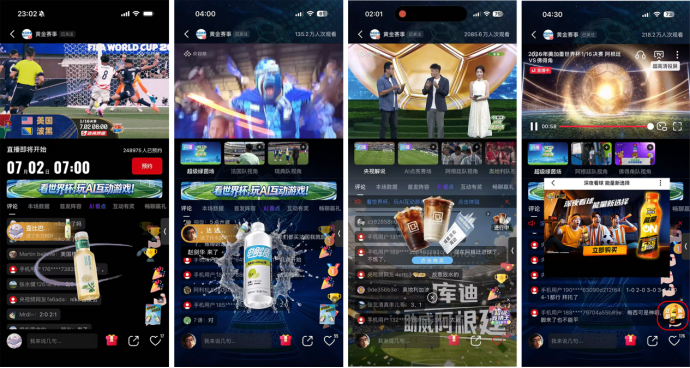

案例发生了什么

乐奇/Rokid 将 AI 眼镜的翻译、导航等能力做成节目内可展示的功能任务，减少“念参数”的硬广感，让观众先看到问题如何被解决。
它解决的策略问题
这页要回答的不是“乐奇 Rokid：AI 眼镜节目植入 是否参与世界杯”，而是它如何通过“节目功能共创”回应“把翻译、导航等功能变成可看的节目内容”这一业务问题。
资源如何变成行动
观看入口
节目功能共创
注意力获取
利用“把翻译、导航等功能变成可看的节目内容”所对应的节目、贴片、直播互动或解说场景进入共同观看时刻。
内容延展
用栏目、短视频、评论、社群或搜索把一次大屏接触延展到小屏讨论。
行动承接
以扫码、优惠、门店、App、会员或线索表单连接用户下一步。
动作拆解
- 把产品能力嵌入主持人或嘉宾的具体任务。
- 以即时演示让抽象 AI 功能可视化。
- 将节目观看后的兴趣导向搜索、试用或购买。
可复用的方法智能硬件植入最有效的呈现不是摆产品，而是让产品完成一个观众也想完成的动作。
传播与业务机制
传播机制
直播和节目提供高密度共同注意力，品牌要用稳定符号而不是单纯频次留下记忆。
参与机制
互动工具、节目板块和多样解说把被动观看变成评论、预测、领取或创作。
业务机制
高频露出需要同步准备零售、搜索或服务入口，才能避免注意力流失。
内容机制
好的节目合作应让品牌承担一个可解释的角色，而不只插入品牌名称。
适用条件、风险与证据
- 区分电视贴片、节目冠名、平台定制和直播互动，不混同统计。
- 提前按赛程准备高光、平淡和意外结果的内容响应。
- 用跨屏搜索、领券、到店或线索数据补足单一收视口径。
证据台账可将已核动作作为内部判断基础；涉及投放规模、销售结果或合作细则时，仍应以品牌、平台或权利方的一手发布为准。 当前记录：已核；素材状态：有图。
资料与下一步
进入中国观赛主场，把共同注意力转为内容与转化。 后续补充时，优先归档品牌官方发布页、视频首帧/完整片、线下执行现场、投放时间与可追溯的效果口径。